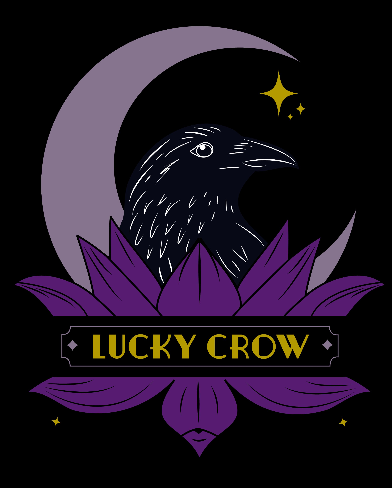
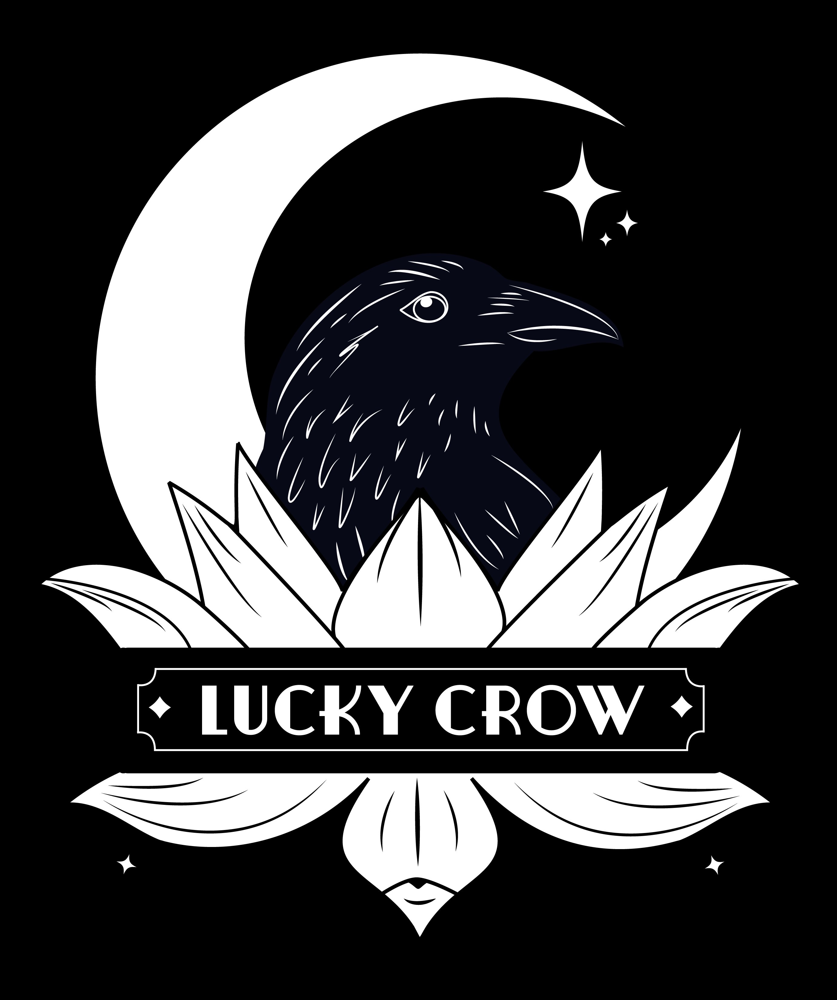

A structured look at what's working, what isn't, and what it takes to make the mark do its job everywhere it needs to.

Every logo goes through the same five areas of evaluation — not style opinions, but functional checks based on common principles for how marks actually perform in the real world. Merch, signage, digital, print, one-color reproduction. A logo has to work across all of them.
This is not a throwaway compliment. Two tests passed cleanly — and the two that passed are the hardest to manufacture. You can't design your way to a memorable concept. You either have one or you don't.
Every element in this mark is there for a reason. The crow, the moon, the lotus (those lotus drinks are not an accident), the name. The concept is right. What the data is telling us is that the elements aren't yet in visual conversation with each other — they're sharing a frame without speaking the same language. That's a fixable execution problem, not a concept problem.
None of these are aesthetic preferences. They're the places where the mark creates real costs — in production, in recognition, in how your audience reads it.
This is where abstract findings become visible. The same logo, at the sizes it will actually be used.

This version is outline-based, not true flat one-color. It only works on light backgrounds — not reversed out on dark. A production-ready one-color mark would need to be rebuilt as solid fills, and currently doesn't exist in the system.
This isn't a start-over. Every element has a reason to be here. What's missing is the work that brings them into harmony — same visual language, proper hierarchy, a system that can scale.
The crow, the lotus, the moon — they need to speak the same visual language. Same line weight, same level of stylization, same attitude. Right now they're in different registers. When they're unified, the mark reads as designed rather than assembled.
"Lucky Crow" is the most important piece of information in this mark. It needs to read at every size the logo gets used — not disappear behind the illustration. The name and the imagery need equal weight in the composition.
The full mark does a lot of work. A simplified version — stripped down to the essential visual signature — gives Lucky Crow something that lives at small sizes, on social profiles, as a favicon, on merch. Not a replacement for the full mark. A complement to it.
The current outline version only works on light backgrounds. A production-ready one-color mark — solid fills, no stroke dependency — opens up embroidery, screen print, stamps, and any reversed-out application. This is a gap the current system doesn't address.
| Action | Owner | Timing |
|---|---|---|
| → Visual language direction decision | Katy + Big Sis | This conversation |
| → Digital icon development | Big Sis | Current scope |
| → Hierarchy + balance refinement | Big Sis | Phase 2 / TBD |
| → True one-color version | Big Sis | Phase 2 / TBD |
The evaluation above covers the full mark — that's the foundation we needed before doing anything else. Not everything identified above is in scope right now, and that's intentional. The current engagement is focused on one thing: a digital-first version of your logo that works at social media scale.
Every decision in the iterations below is in service of these goals. Not redesign for its own sake — targeted fixes that make the mark do its job at the scale it needs to.
Social profile images display at approximately 110px on most platforms. That's the primary target. The mark needs to be immediately recognizable — brand name legible, key visual elements reading clearly — at that size without zooming in.
Right now the crow and moon carry the top half; the lotus and name band carry the bottom — but they're not in visual conversation. Bringing them into balance so the mark reads as a unified composition, not two elements stacked.
The crow and the lotus are currently drawn in different registers. The digital version works toward a consistent visual language across both — same weight, same stylization level, same attitude.
Digital best practice, not optional. Colors need to pass contrast ratios for accessibility. This also makes the mark perform better at small scale — higher contrast = more legible at 110px.
At small scale, every element that isn't doing critical work becomes noise. The digital version strips back to what needs to be there and nothing more — so what remains can be read clearly.
The changes below address the specific gaps identified in the evaluation — built for digital-first use: social profiles, website, digital applications.
Iteration work coming — Erin to populate this section.